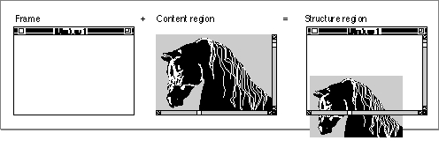

Legacy Document
Important: The information in this document is obsolete and should not be used for new development.
Important: The information in this document is obsolete and should not be used for new development.


Window Regions
The Window Manager recognizes a number of different special-purpose window regions, which are defined by either the Window Manager or the window definition functions.The most obvious window regions are the parts of the visible window that the user manipulates to control the display. These window regions correspond to the standard window parts. The drag region is the area occupied by the title bar, except for the close box and zoom box. (The user moves the window by dragging it by its title bar.) The size region, close region, and zoom region are the areas occupied by the size box, close box, and zoom box, respectively.
When the user presses the mouse button while the cursor is in one of your windows, you use the Window Manager function
FindWindowto determine the region in which the mouse-down event occurred. (The FindWindow function calls the window's window definition function, which defines and interprets the window-manipulation regions.) Depending on the result, you then call the appropriate Window Manager routine or your own routine for handling the event. For more information about determining where the cursor is when the user presses the mouse button, see "Handling Mouse Events in Windows" on page 4-37. For discussions of how to use the Window Manager routines for moving, sizing, closing, and zooming windows, see "Moving a Window" beginning on page 4-46 and the sections that follow it.The Window Manager also makes a broad distinction between the parts of the window
it draws automatically and the parts drawn by your application. The Window Manager draws the window frame--the title bar, including the close box and zoom box, and
the window's outline. (The Window Manager also draws the size box, but only when your application calls theDrawGrowIconprocedure.) Your application is responsible for drawing the content region--that is, the part of the window in which the contents
of a document, the size box, and the window controls (including the scroll bars)
are displayed.The entire screen area occupied by a window, including the window outline, title bar, and content region, is the structure region. Figure 4-10 illustrates the frame, content region, and structure region of a window.
Figure 4-10 Window frame, content region, and structure region

The drawing region of a graphics port associated with a window encompasses only the window's content region.
As the user creates, moves, resizes, and closes windows on the desktop, portions of windows may be obscured and uncovered. The Window Manager keeps track of these changes, accumulating a dynamic region known as the update region for each window. The update region contains all areas of a window's content region that need updating. The Event Manager periodically scans the update regions of all windows on the desktop, generating update events for windows whose update regions are not empty. When your application receives an update event, it redraws the update region. Both your application and the Window Manager can manipulate a window's update region. The sections "Updating the Content Region" on page 4-35 and "Maintaining the Update Region" on page 4-36 describe how the Window Manager and your application track and use the update region.